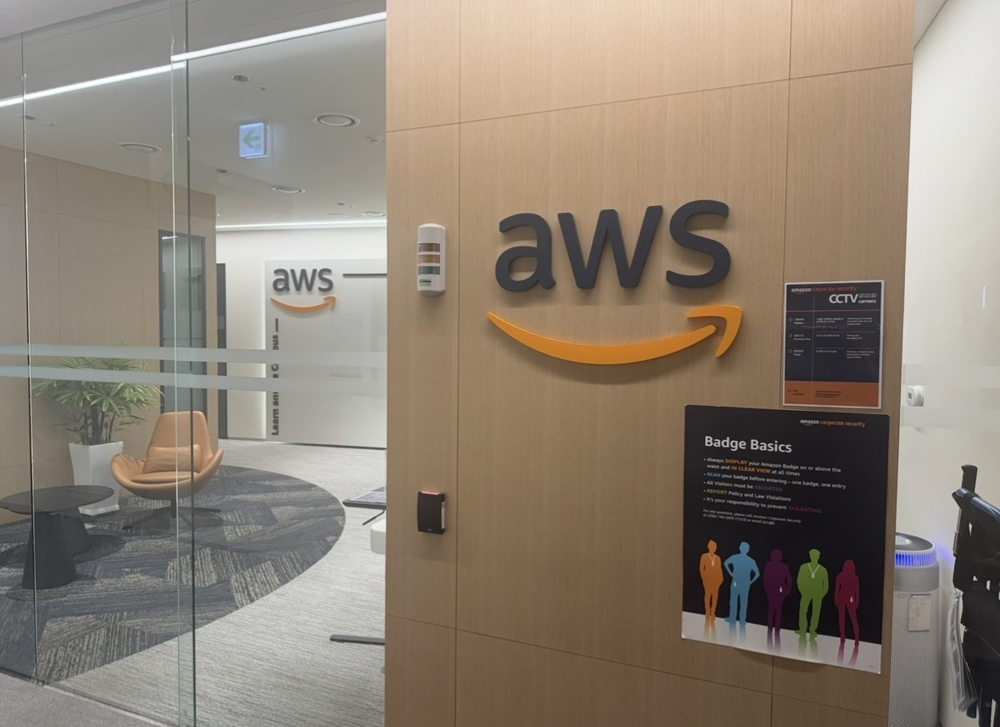
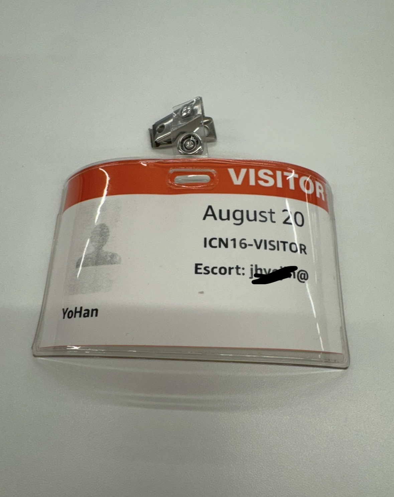
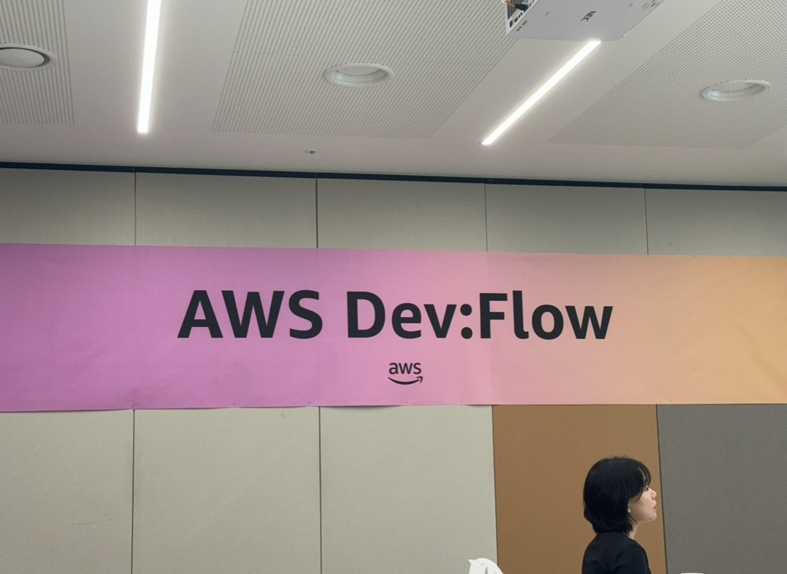
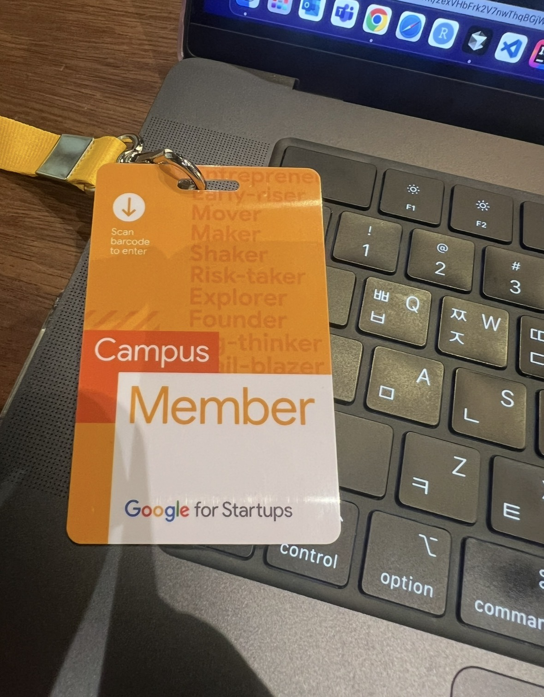
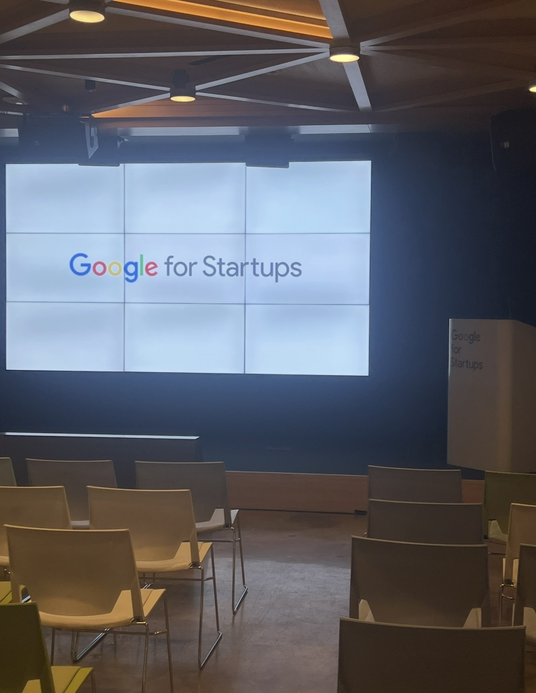
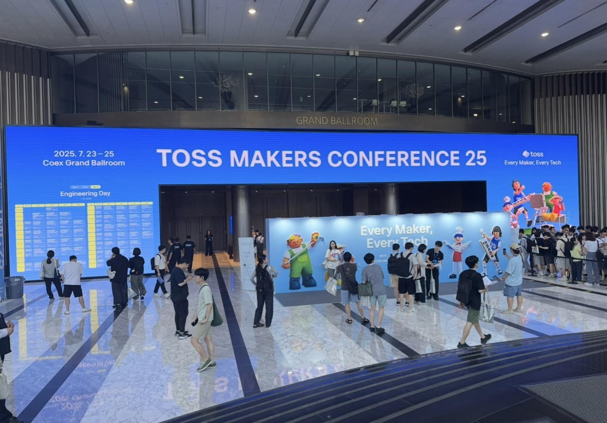
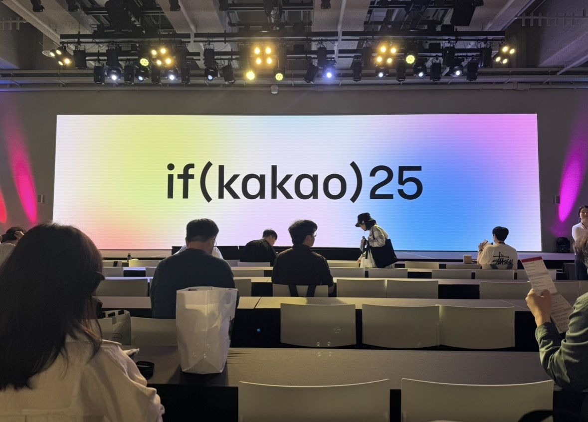
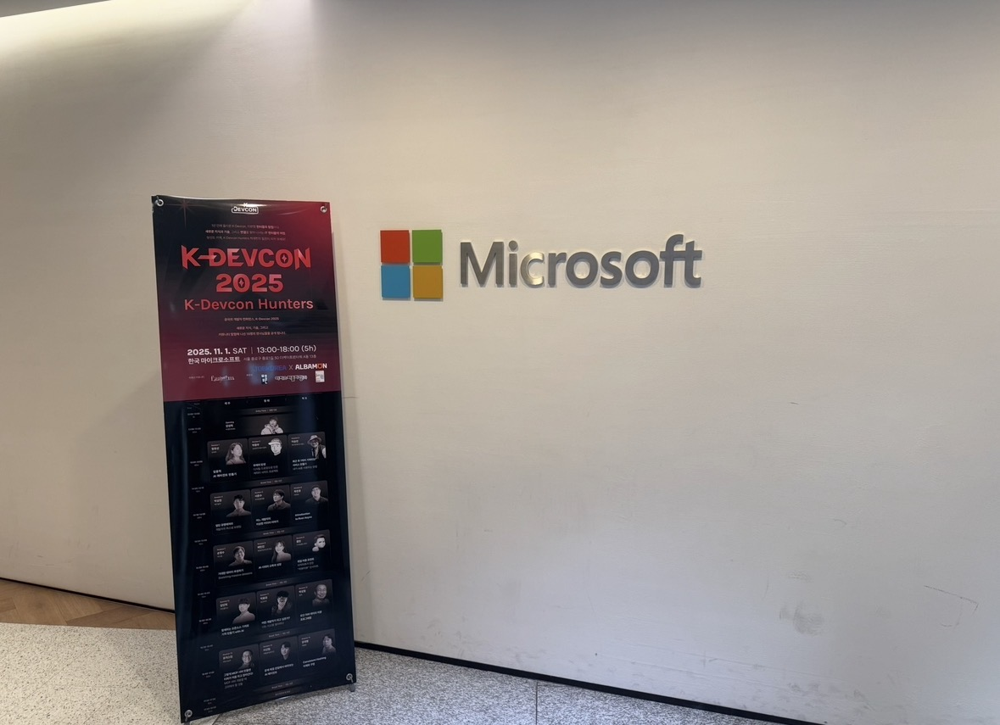
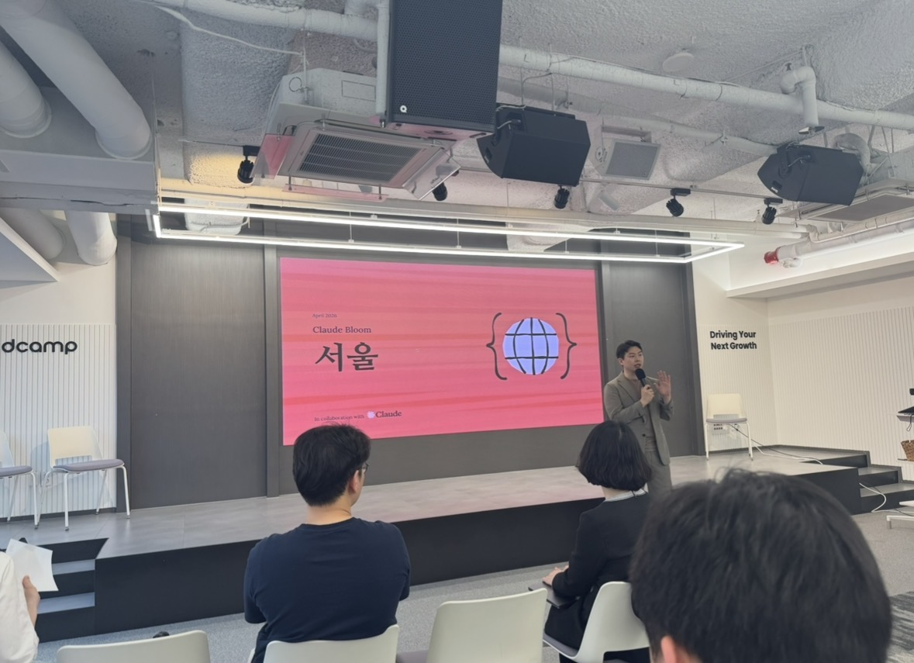
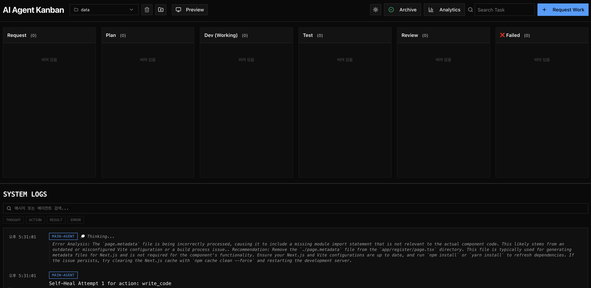

개발자가 매번 직접 판단하고 기록
Concentrix
AI Agent Workflow
Basalt
AI와 함께 작업을
계획/실행/검증까지
Yohan Choi









Research
Networking
이 기업들의
공통점은 무엇일까요?
작년부터 직접 참여한 컨퍼런스와 AI 네트워킹 현장
AWS
Google
Toss
Kakao
Microsoft
Anthropic
Observation
AI 관심은 높지만
업무 적용은 어렵다
개발자
비개발 직군
반복 업무
검증 부담
실무 적용
Problem
페이지 하나에도
반복되는 과정이 있다
요청 해석
구조 판단
컴포넌트 설계
코드 작성
화면 확인
결과 정리
Why
반복되는 개발 흐름을
하나의 작업 단위로 묶기
요청부터 검증까지 흐름으로 관리
Service Flow
Request에서 Done까지
Requesttask 등록
Planworkflow 생성
Dev코드 수정
Test검증
Done결과 정리
Service Flow
작업은 Kanban 흐름으로 관리됩니다

Request
사용자가 처리할 작업을 등록합니다.
Core Value
코드만 남기는 것이 아니라
과정을 남긴다
Workflow
Changed Files
Execution Logs
Verification
Screenshots
Summary
AI Structure
Orchestrator가
Agent와 Skill을 조율한다
Orchestrator
작업 흐름을 관리
Agent
역할을 맡은 AI 담당자
Skill
실행에 사용하는 도구
Project Context
실제 프로젝트 정보
Technical Stack
화면, 데이터, 모델을
역할에 맞게 분리
Next.js
화면과 API 구성
DB
project, task, workflow, logs, verification
3 LLM Models
Fastllama3.2:latest
Smartgemma4:e2b
Codingqwen2.5-coder:7b
Hugging Face
tuning
quantization
format conversion
benchmark
Project Context
AI가 추측하지 않도록
프로젝트 맥락을 먼저 읽는다
Connected Project
local frontend app
Project Context
- project structure
- package.json
- router
- UI components
Plan / Code / Verify
맥락 기반 실행
Demo
시연에서 볼 것
- Task 등록
- Workflow 생성과 실행
- 검증 결과와 변경 이력 확인
Next Improvements
실행 환경 고도화입니다
기능 검증을 넘어, 더 빠르고 안정적인 실행 환경으로 확장하는 단계
감사합니다
AI Agent Workflow
Yohan Choi